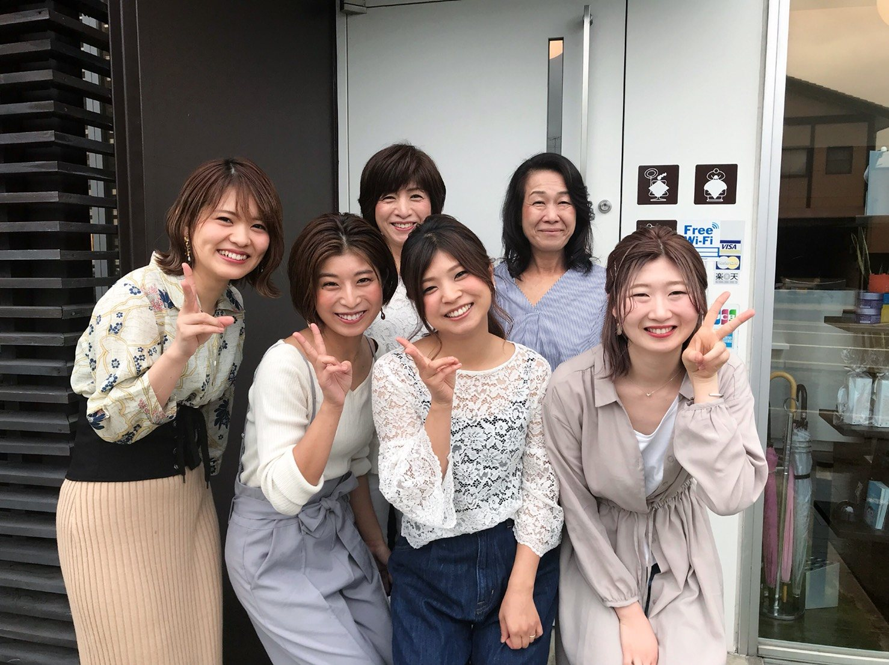
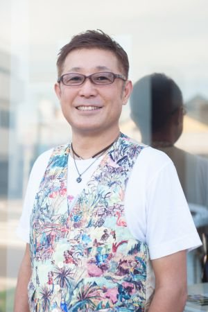
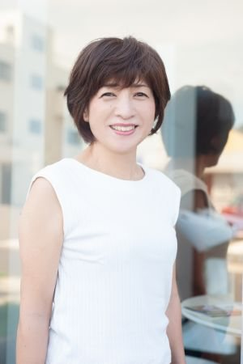
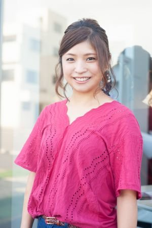
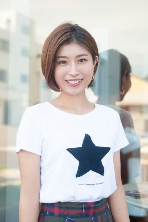
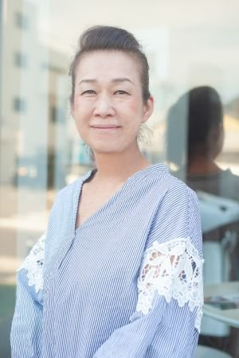
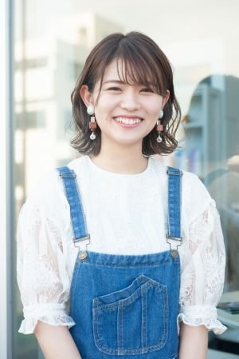
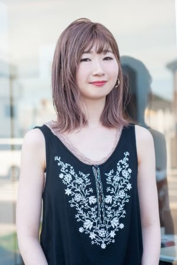

スタッフ紹介
世代を超えた女性スタッフと理容師免許を持つオーナー。カウンセリングから仕上げまで、最後まで同じスタイリストが担当します。

廣上 猶造Hirokami Yuzo
当店のホームページをご覧くださりありがとうございます。リボーン・オーナーの廣上です。当店は高崎に4代続く創業90年の理美容室です。地域の皆様には長年支えて頂き、心から感謝申し上げます。現在は娘二人も加わり、年代・性別を問わず、幅広い年代層のご要望に対応できるスタッフで営業しております。また技術や接客についても常に成長志向でチャレンジし、より良いものを提供していきます。素敵なヘアスタイルを通し、沢山の方に笑顔を届けてまいります。どうぞよろしくお願い致します。
| 誕生日 | 9/26 |
|---|---|
| 出身地 | 高崎市 |
| 星座 | てんびん座 |
| 趣味 | ゴルフ・ワイン |
| 保有免許 | 理容師免許・管理理容師免許・ハホニコヘアケアリスト |
| 得意なこと | オシャレメンズヘア |

廣上 由美子Hirokami Yumiko
小さい頃、両親が美容室や床屋さんへ行くのに良く連れて行って貰いました。そこは非日常的でとても楽しくて居心地の良い場所でした。中学生になり、1人で美容室に行った時の緊張と期待と不安。でもその時の美容師さんに感動し、私もいつかお客様を綺麗にするお手伝いをしたい！と思い憧れの職業になりました。私は主にオーナーのサポート役なので、お客様のご来店からお帰りになるまで気持ち良く居心地の良い場所になるように、そして笑顔で帰って頂けるように心がけています。
| 誕生日 | 10/21 |
|---|---|
| 出身地 | 富岡市 |
| 星座 | てんびん座 |
| 趣味 | 美味しい料理で美味しいお酒をいただく事、孫達と遊ぶ事 |
| 保有免許 | 美容師免許・管理美容師免許 |
| 得意なこと | 笑顔でおもてなし |

佐藤 未倫Sato Misato
私の小さい頃の夢は、保育士でした。成長していくなかで高校生の時に文化祭や体育祭で友達の髪の毛をアレンジしたりしているうちにやっぱり美容師になりたいと志すようになりました。普段の生活を考えセットしやすい髪型、やりたい事を我慢させないように時間短縮、美容室に来た時は普段自分ではできないアレンジなどをして可愛くなってもらう。お子さんには夢を与えられるような存在でいたいです。
| 誕生日 | 9/2 |
|---|---|
| 出身地 | 高崎市 |
| 星座 | おとめ座 |
| 趣味 | 旅行です。計画を立てるところからが大好きです。 |
| 保有免許 | 美容師免許・理容師免許・管理美容師免許・管理理容師免許 |
| 得意なこと | 可愛いスタイル。ショートもミディアムも可愛い感じ、前髪・顔まわりを可愛くするのが得意です。 |

小宮山 奈津己Komiyama Natsuki
美容師になるきっかけは、両親がこの職業についていたからです。毎日お客様が素敵になって、笑顔になるのを見て、私も美容師になりたいと強く思いました。お客様が髪だけではなく何でも気軽に相談したり話せたりする存在になりたいです。美容室に来た時だけではなく、毎日のセットをやりやすく、身近で寄り添い、すぐに思い出してもらえるような美容師でありたいです。
| 誕生日 | 10/13 |
|---|---|
| 出身地 | 高崎市 |
| 星座 | てんびん座 |
| 趣味 | ドライブ（助手席）笑 |
| 保有免許 | 美容師免許 |
| 得意なこと | ショートスタイル。自分自身の長年のショート経験を生かして、どこにバランスをもっていくとキレイなのか、どうやったら首がキレイにみえるか考えながらカットさせていただいております。 |

林 まり子Hayashi Mariko
私が美容師になったきっかけは父の言葉でした。将来何をしたいかあまり考えていなかった私に、これからは女性も手に職を持った方が良いのではないかと、そして女性が女性を美しくする事が良いのではと美容師になりました。私もそうですが、誰にでもコンプレックスがあり、その悩みを少しでも解決でき、髪のことだけでなく何でも相談できる美容師でありたいと思っています。
| 誕生日 | 5/7 |
|---|---|
| 出身地 | 渋川市 |
| 星座 | おうし座 |
| 趣味 | 孫と遊ぶ事・色々な料理を作ってみる事 |
| 保有免許 | 美容師免許・着付け技能免許 |
| 得意なこと | 骨格を生かしたショートスタイル・着付け |

狩野 沙也加Kano Sayaka
美容師になりたいと思ったのは、おばあちゃんがきっかけです。小さい頃は髪の毛がすごく長かったので、おばあちゃんが毎日髪の毛を結んだり編んだりしてくれました。それを見よう見まねでお人形で遊んだり、母が知り合いからマネキンを貰ってきてハサミで切ってみたり、美容師という職業を知ってからはずっとなりたい夢でした。お客様のなりたいスタイルを作るだけでなく、頭皮や髪の毛のお悩みを解決できるような美容師になりたいです。
| 誕生日 | 3/30 |
|---|---|
| 出身地 | 前橋市 |
| 星座 | おひつじ座 |
| 趣味 | 美味しいもの巡りです。とにかく食べることが大好きです。 |
| 保有免許 | 美容師免許 |
| 得意なこと | お客様の雰囲気に合わせて可愛くアレンジをしたり、可愛い巻き方をレクチャーすることが得意です。 |

白石 絵理奈Shiraishi Erina
私が美容師を目指したきっかけは、何よりお客様に喜んで頂く仕事がしたかったからです。自分も髪型を変えることで気分が上がったり、心機一転新たな気持ちになる事が出来ます。美容師という仕事を通し、沢山の笑顔のお手伝いが出来るよう頑張ります。
| 誕生日 | 9/22 |
|---|---|
| 出身地 | 高崎市 |
| 星座 | おとめ座 |
| 趣味 | 旅行 |
| 保有免許 | 美容師免許 |
| 得意なこと | 笑顔とヘッドスパ |

ご予約・ご相談はお気軽に
空き状況カレンダーからのWEB予約・LINE・お電話からご予約いただけます。
初めての方も、髪のお悩み相談だけでも大歓迎です。